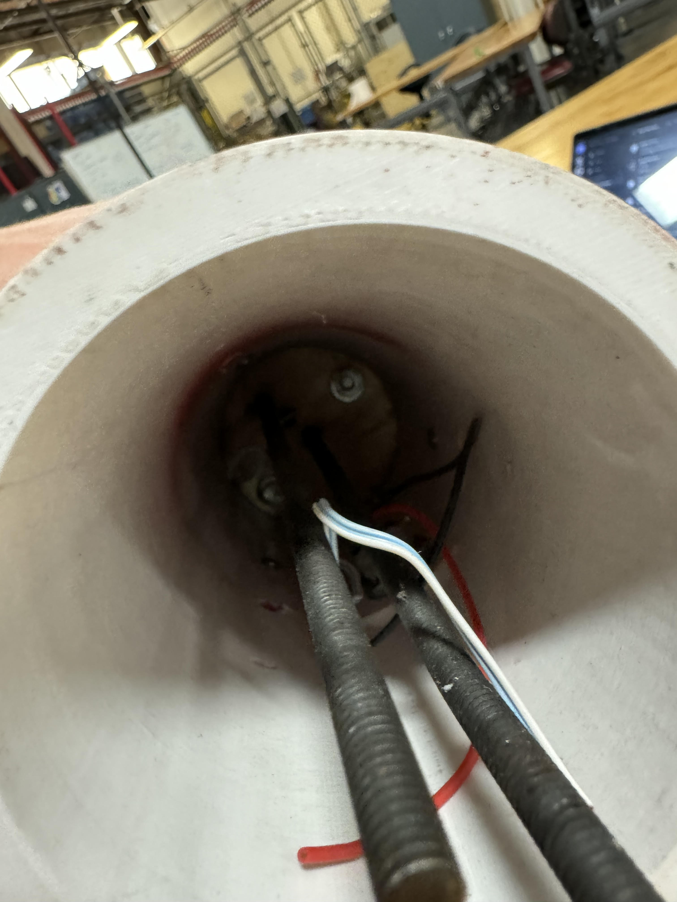
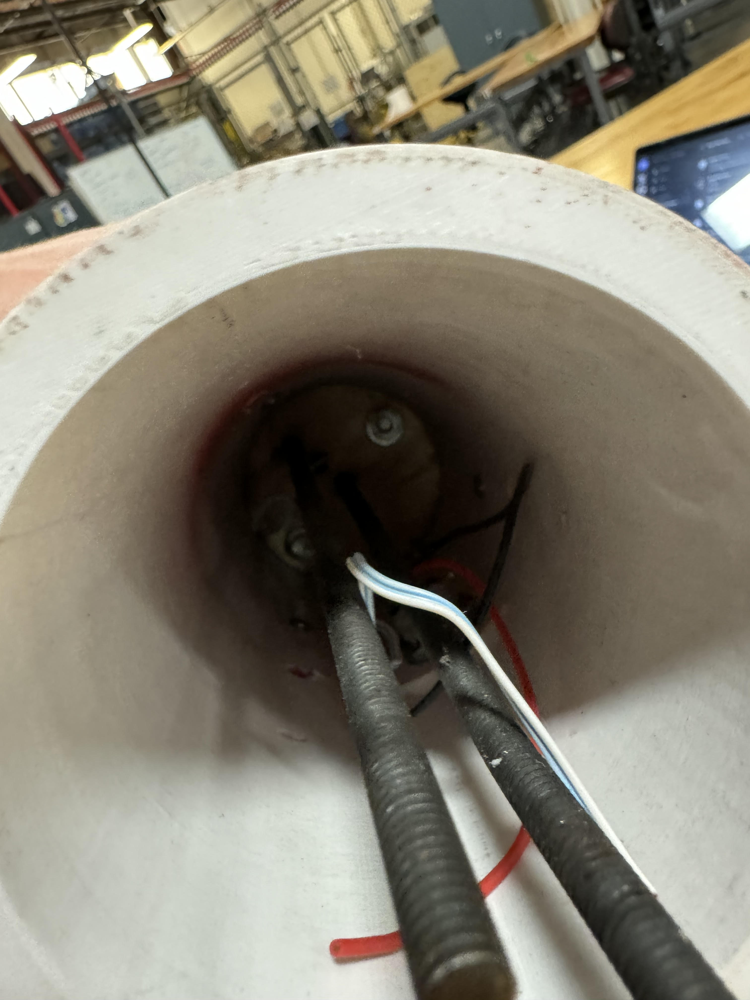
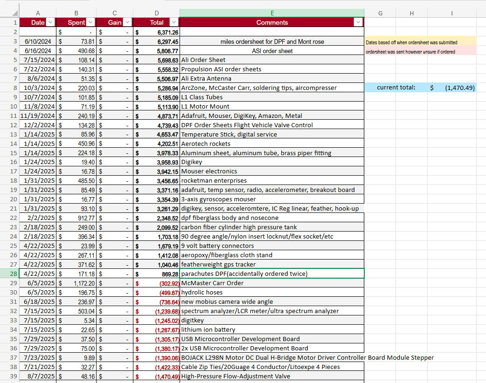

Yes this is a bit of a big read but I promise it's worth it.
This is River City Rocketry. We are the University of Louisville's competetive rocketry club we compete in competitions all over the country. The current two competition we are in are DPF and IREC. DPF is Dollar-Per-Foot where for every foot off of the ground we get our rocket, we will be awarded a dollar. However, we are required to build our own liquid engine rocket, which involes nitrogen and karoseen as fuel. The second competition we are in is called IREC or International Rocket Engineering Competition. This competition we have just started and will have use building a payload and required to send that rocket up into the atmospher and having to retrieve it. I have been involved in various stages of both competitions. In DPF I helped design the nosecone but then moved to a more behind the scenes role dealing with the university. My responsibility on, after dealing with the nosecone, was university, legal, relations, and keeping track of the finances. DPF is extremely costly and and I'm keeping track of how much we've spent, creating budgets for each team, and communicating that with the team leads and the university. My responsibility with IREC is more technical related. I'm on the vehicle and payload team. Vehicle has the most responsibility as vehicle creates almost everything with the competition rocket. Currently with vehicle we have 11 projects: making an epoxy roller, epoxy press fit nozzle, nose cone eqution generator, ubolt tray stack, alitmeter storage, ebay suspension system, alternative seperation techniques, determine composite's density, pva composite support, composite L1. These are all projects that I am helping to create and bring to life. Some of them are important while others aren't. My personal favorite is the suspension system for the rocket. The payload team has similar projects as well. These are all things that we have to complete for IREC. RCR has given me leadership experience, communication skills, technical skills, and actual hands-on experience. I'm extremely happy and glad I decided to join them.
An example of a communication issue I had to deal with was we had a captain that was not very well recieved. I had to handle the captains roles and communicate with the team, effectively doing two jobs at once. This was a fairly stressful time but I just kept talking with everyone and making sure everyone knew what was going on and how it was being handled. Eventually the team was able to work through it's problems and it was back to being great again.
I wanted to quickly explain each of these pictures and videos. From top to bottom on the left side is a picture of our open house. Each year when the fall semester starts we invite all of the current and new RCR members and show off everything we've done and built, we play games, take out our compeition rocket parachute, which is what that is, and run around with it so people can feel the force of it. It's a really fun night and a great way to meet everyone. That picture was from 2024. The picture below it is from the same night, the picture below that is the new leadership in the summer of 2024, this was when I joined the leads team. The picture below that is the payload I helped the create with the Mont-Rose Rocket. Most-Rose was from our competition in the spring of 2024, however we had to drop out to focus on new members, and mostly to focus on DPF. On the right side the top photo is the finance sheet that keeps track of everything we spend money on, yes I am absolutely fine to have this here, and yes we are in deby lol. Below that is an example of an order sheet, these are what I submit to the university to have items ordered. Below that is me sleeping at an outreach event that me and the media lead went to. I kinda thought it would be funny to inlcude it. Below that picture is an outreach event the team went to at an elementary school where we taught kids about rockets. We do thinks like that fairly often as we like sharing our knowledge with younger poeple. Finally, the video below all of this is the Mont-Rose rocket launch.


 


.jpg)